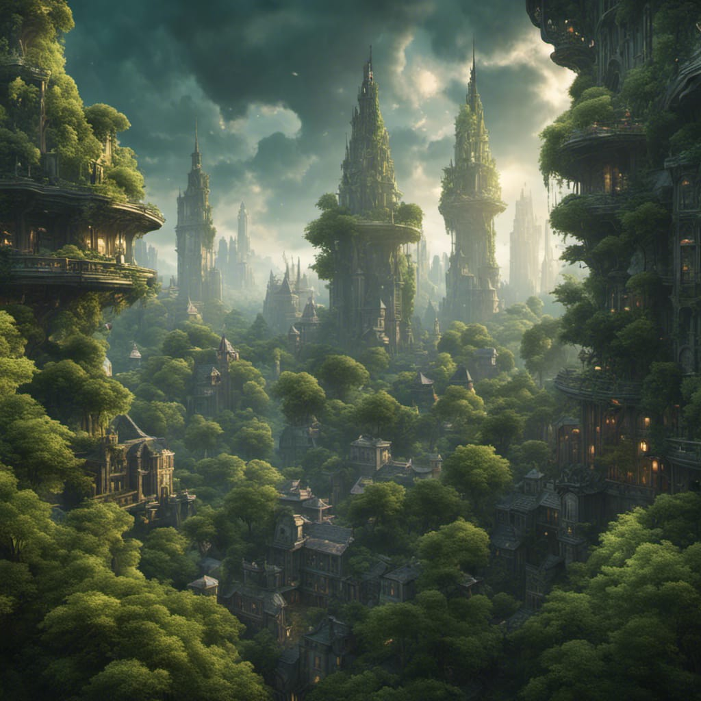

Imagine a world where humans respect non-human habitats, forging connections that enhance both ecosystems and urban living. The boundaries between human and non-human spaces blur as we design environments where nature and civilization coalesce.
Interspecies communication fosters mutual understanding, revealing hidden intricacies of non-human lives. The ability to converse with other species unearths new perspectives and insights, transcending language barriers to establish profound connections.
Design that prioritizes non-human species contributes to biodiversity preservation and the overall health of ecosystems. By crafting spaces where all life flourishes, we safeguard the intricate web of relationships that sustain our planet.
The growing gap between enhanced and non-enhanced individuals underscores the urgency of ensuring equal access to technological advancements. Societal cohesion hinges on fairly distributing transformative benefits, safeguarding against inequality and marginalization, fostering a more just future.
Transhumanism's alluring promise of extended lifespans and cognitive enhancements brings forth ethical dilemmas that redefine human identity. Striking a balance between scientific progress and ethical considerations becomes crucial as we navigate uncharted ethical territories, reshaping the contours of human existence.
Biomimicry, inspired by nature's ingenuity, offers eco-friendly solutions for energy and infrastructure challenges. Emulating natural designs not only minimizes our environmental impact but also paves the way for harmonious coexistence between human progress and the natural world, forging a sustainable path forward.
Devices facilitating interspecies communication enable us to understand and respect non-human perspectives. By deciphering the languages of our fellow inhabitants, we bridge the gap between species and foster empathy-driven relationships.
Through innovative design, harmonious coexistence with non-human entities and responsible transhumanist development becomes not only possible, but essential for our shared future. By embracing our role as stewards of both the natural world and technological progress, we pave the way for a world where relationships flourish across all boundaries.